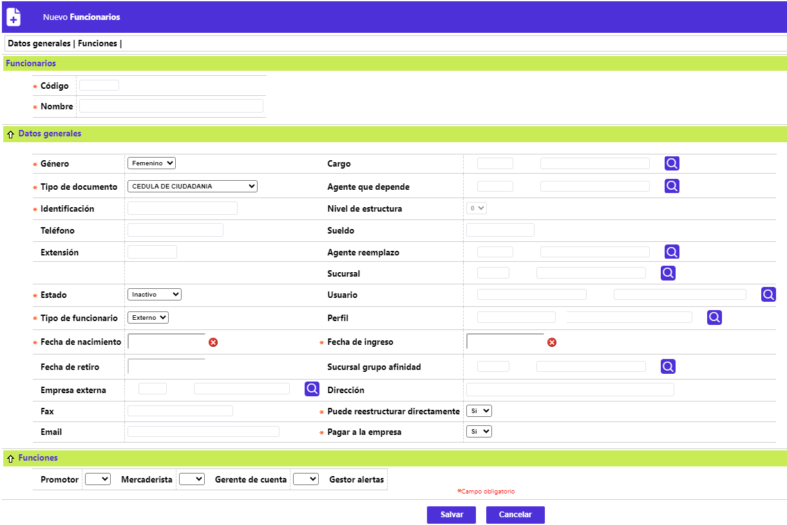
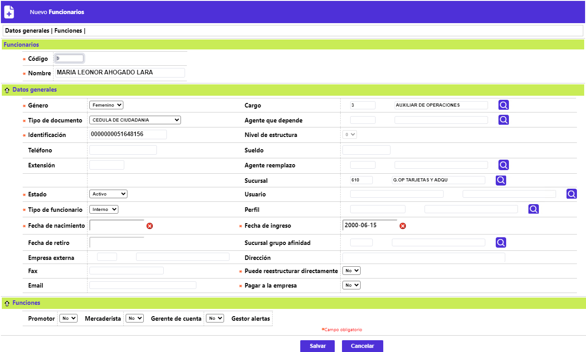
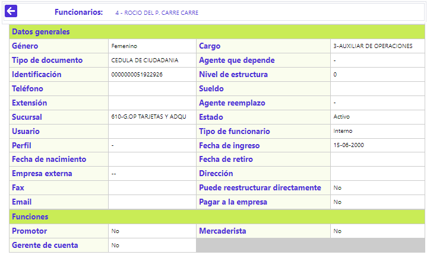

Funcionarios
Mediante esta función se habilita la consulta y mantenimiento de la tabla en la cual, la entidad almacena los principales datos básicos de sus colaboradores, sean o no empleados directos o personal de apoyo, que estén relacionados con el giro del negocio de tarjetas débito e interactúen con este aplicativo. El formulario, además de contar con un filtro de búsqueda, dispone de los enlaces: Actualizar, Eliminar, Adicionar y Detalle.
Filtro: Se pueden realizar consultas utilizando los siguientes datos como criterios para la búsqueda:
|
Código |
Campo numérico de cinco posiciones, debe contener el código del funcionario por el cual se desea realizar la consulta. |
| Nombre | En este campo alfanumérico de 30 posiciones, debe contener el nombre del funcionario por el cual se desea realizar la consulta. |
| Usuario | Campo alfanumérico de 30 posiciones, debe contener el usuario con el que se loguea al aplicativo y por el cual se desea realizar la consulta. |
|
Estado |
Campo que posee lista de valores tipo combo, de la cual se debe seleccionar entre: Nulo, Inactivo, Retirado, Activo o Suspendido, el dato correspondiente, y por el cual se desea realizar la consulta. |
Adicionar: Si el usuario invoca la opción Adicionar se despliega un formulario con los siguientes bloques:

Código |
Campo numérico de cinco posiciones, obligatorio, en el cual se debe registrar el código con el que se identifica a cada funcionario. |
| Nombre | En este campo alfanumérico de 30 posiciones, obligatorio, se registra el nombre del funcionario asociado a cada código. |
| Genero | Campo que posee lista de valores adjunta de la que se debe seleccionar entre Femenino o Masculino según corresponda. |
Cargo |
Campo no obligatorio, que posee lista de valores, de la que se debe seleccionar el cargo desempeñado por el funcionario que se está adicionando. |
Tipo de Documento |
Este campo cuenta con lista de valores tipo combo, de la que debe seleccionarse el tipo de documento de identificación del funcionario que se está adicionando. |
Agente que depende |
Este campo no obligatorio, contiene lista de valores poblada a partir de esta misma tabla, de la cual se puede seleccionar el superior del cual depende el funcionario que se está adicionando, acorde con las relaciones jerárquicas ascendentes que pueden darse entre los mismos. Al ingresar el código de agente depende se debe tener en cuenta que dicho agente debe tener un nivel de estructura estrictamente menor al agente de quien va depender. |
Identificación |
Campo numérico de 16 posiciones, obligatorio, dentro del cual se registra el número del documento que identifica al funcionario que se está adicionando. |
Nivel de estructura |
Campo que posee lista de valores adjunta que permite asociar a cada funcionario un valor numérico de cero a cinco, para facilitar el control de la jerarquía (responsabilidad) entre ellos. Sólo se habilita cuando exista una relación de dependencia y se haya diligenciado el campo Agente que depende. |
Telefono |
Este campo alfanumérico de 15 posiciones, no obligatorio, permite registrar el número telefónico en que puede ser contactado el funcionario. |
Sueldo |
En este campo numérico de hasta 10 dígitos, no obligatorio y de carácter simplemente informativo, se puede ingresar el valor del sueldo básico mensual percibido por el funcionario. |
Extensión |
Campo alfanumérico de 5 posiciones, no obligatorio, en el cual se registra, si existe, el número de la extensión en que puede ubicarse al funcionario. |
Agente reemplazo |
Campo no obligatorio, que posee lista de valores, poblada a partir de esta misma tabla, invocando los nombres de los demás funcionarios, permite establecer relaciones jerárquicas descendentes entre los mismos, el sistema asigna el código correspondiente, desplegando el nombre a éste asociado. |
Sucursal |
Este campo que cuenta con lista de valores, poblada en la opción Estructura orgánica, permite seleccionar la sucursal o dependencia a la que está asociado un funcionario, o bien, se puede digitar el código de la misma. |
Estado |
Campo obligatorio, que posee lista de valores tipo combo, de la cual se debe seleccionar entre: Nulo, Inactivo, Retirado, Activo o Suspendido, la condición o estatus del funcionario que se está adicionando. |
Usuario |
Campo no obligatorio, que posee lista de valores adjunta, de la que se puede seleccionar el usuario asignado al funcionario, y que le permite acceder o ingresar a la base de datos. |
Tipo de Funcionario |
Este campo cuenta con lista de valores tipo combo, de la que se debe seleccionarse entre: Interno o Externo, la condición del vínculo del funcionario con la entidad financiera. |
Perfil |
Este campo obligatorio, posee lista de valores con los Perfiles de promotor de la que se puede seleccionar el perfil al que pertenece el agente. |
Fecha de nacimiento |
Campo obligatorio que dispone de la funcionalidad de un calendario y permite definir, en formato AAAA-MM-DD, el dato de la fecha de nacimiento del funcionario. |
Fecha de ingreso |
Campo obligatorio que dispone de la funcionalidad de un calendario y permite definir, en formato AAAA-MM-DD, la fecha de ingreso del funcionario a la entidad. |
Fecha de retiro |
Campo que inicialmente aparece como inhabilitado, se activa y convierte en obligatorio cuando el dato del campo Estado, pasa a Retirado, dispone de la funcionalidad de un calendario y permite definir, en formato AAAA-MM-DD, la fecha de retiro del funcionario de la entidad. |
Sucursal grupo de afinidad |
Campo que aplica, cuando el funcionario que se está adicionando tiene o está vincula a un Grupo de afinidad. |
Empresa externa |
Campo que inicialmente aparece como inhabilitado, se activa cuando el dato del campo Tipo de funcionario, corresponde a Externo, no obligatorio, posee lista de valores adjunta, de la que se selecciona la organización a la que pertenece dicho funcionario. |
Dirección |
En este campo alfanumérico de 40 dígitos, no obligatorio, se ingresan los datos de la ubicación (nomenclatura) de la sede principal de la empresa externa para la que labora el funcionario. |
Sucursal grupo de afinidad |
Campo que aplica, cuando el funcionario que se está adicionando tiene o está vincula a un Grupo de afinidad. |
Fax |
Campo alfanumérico de 20 posiciones, no obligatorio, dentro del que se digita el número(s) del fax de la empresa externa. |
Puede reestructurar directamente |
Campo no obligatorio, permite determinar o señalar para cada funcionario si posee o no el atributo de realizar o gestionar reestructuración de obligaciones sin que las mismas cumplan con los parámetros establecidos para ese evento. |
Este campo alfanumérico de 30 posiciones, no obligatorio, permite registrar la dirección electrónica del funcionario, bien sea Interno o Externo a la entidad, información que es supremamente útil y necesaria en casos como el de los funcionarios que atienden fraudes y deben ser informados oportunamente de los posibles fraudes detectados por los procesos de alertas. |
|
Pagar a la empresa |
En este campo no obligatorio, que se activa únicamente para los agentes externos, se indica de manera individual si las comisiones y demás valores devengados por éstos deben ser cancelados directamente a la empresa para la que laboran o en su defecto a ellos mismos. |
Funciones: El aplicativo le permite a la entidad, indicar los atributos o actividades que puede desempeñar el funcionario, marcando: Si o No, en cada uno de los siguientes campos: Promotor, Mercaderista y/o Gerente de cuenta.
Actualizar: Al activar ese enlace se despliega un formulario en el cual todos los campos son modificables.

Detalle: Al activar ese enlace se despliega el siguiente formulario:
